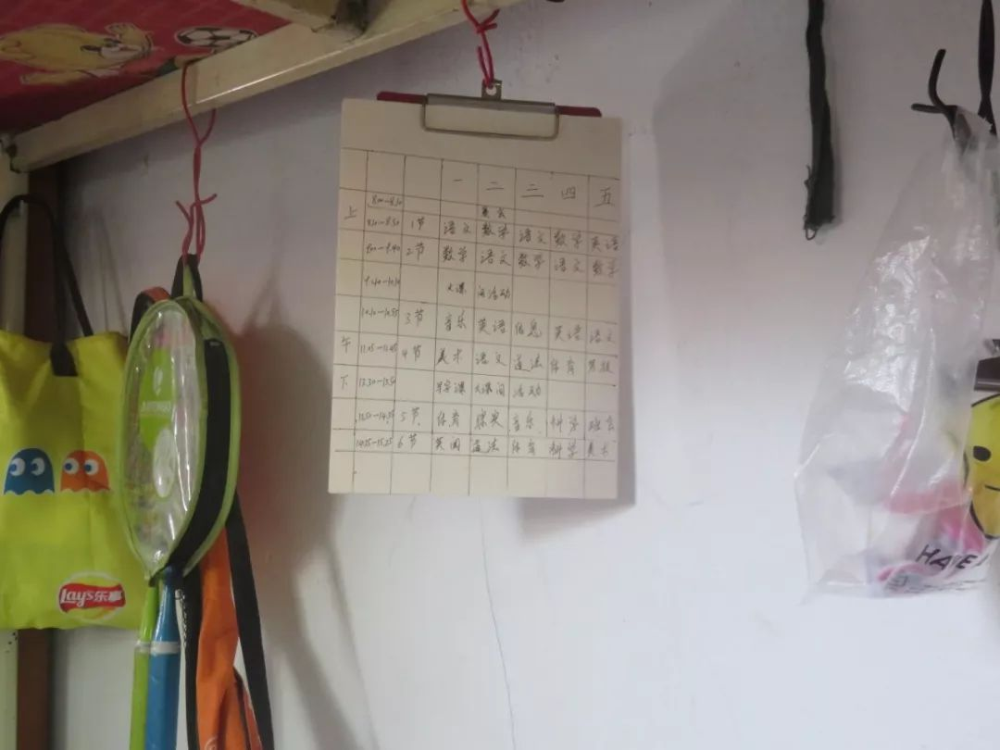
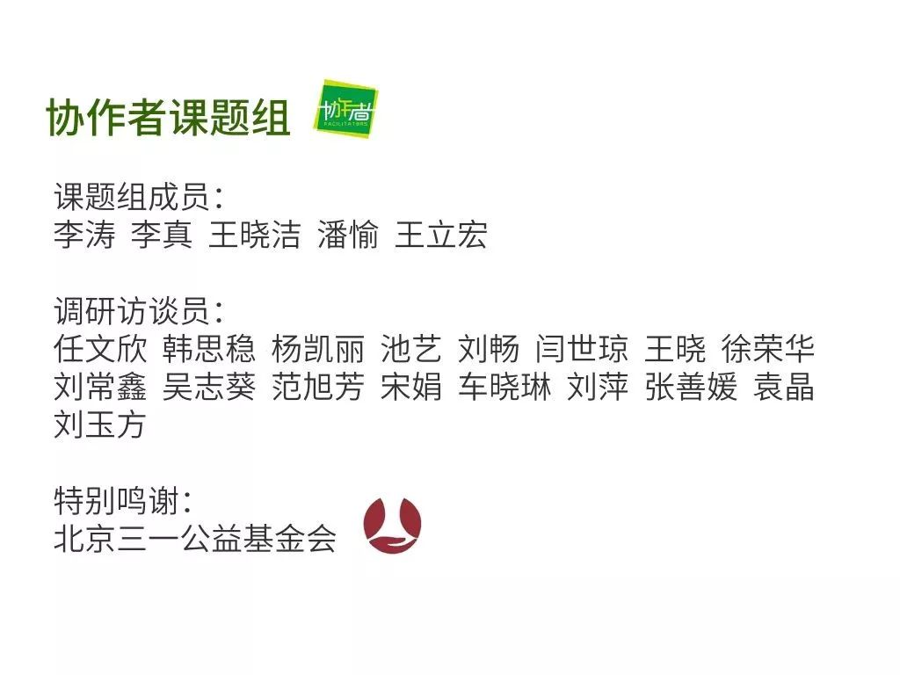

口述实录 | 这对父子是列车长和护士，他们冲上了抗疫前线……
原文链接 备份链接 编者按：这是一对父子。父亲赵华明是铁路上海客运段京沪车队的列车长。17年前非典时期，他跑1461/1462次京沪绿皮车。今年新型冠状病毒疫情之际，他仍出乘，跑临客，去重庆。与17年前不同的是，当年在读小学的儿子赵程，如 …
本文是协作者在“农民工抗疫救援行动”中，针对困境农民工家庭开展的个案访谈之一，旨在快速识别疫情中的脆弱人群及其需求，为疫情防控和救援工作提供参考，我们整理出来与你分享。

疫情下的深呼吸
——困境农民工家庭个案实录（之三）
我担心孩子，不知道还有没有学上
口述者：大朕（化名）/安徽籍
打工所在地：南京
编者注：大朕，男，57岁，患有脑梗和高血压，和妻子一同在南京打工，照顾孙女欣欣（化名）。欣欣的父亲已经过世，母亲改嫁。大朕回收废品，妻子做保洁工。为了孙女可以在南京读书，两个老人日复一日坚持着。
之前欣欣的爸爸妈妈都在南京打工，欣欣爸因为借高利贷还不上款自杀了，欣欣妈在欣欣八个月大的时候就离开了，自此以后欣欣由我和她奶奶抚养长大、供她上学，她也是我们两个老人生活的希望和依靠。
我平常就在附近收一些废品，收别人不要的衣服、家电啥的再拿去卖。一开始欣欣奶奶也是帮我收废品，后来左右邻居大家都认识了，经别人介绍，欣欣奶奶才有了保洁这个工作。我和欣欣奶奶都没有社保……等到老了再看，我想的是在哪里都无所谓，回去老家也不知道做什么工作，年纪大了也不能种地，现在农村种地都是机械化，收了给你放在地头上。而且现在种地投资挺大的，一亩地1000元的收成，投入500-600元的成本，再算上人工成本费，辛苦一季赚不到钱，也种不出来什么出路。我跟欣欣奶奶说，你找一份活，房租够一些，能够生活的，苦一点也不算什么。春节到现在奶奶也没有放假，需要去清理卫生，也不知道春节的工资怎么发，最近一直没有发工资。

▲ 协作者社会工作者探访大朕家（摄于2018年秋季）
春节一般我们也不回老家，等小孩快放假的时候车票都很难买，不会选择春节期间回。我年纪大了，有脑梗和高血压，身上经常疼。2018年2月份犯了次病，只能回老家住院治疗，南京的药贵，也舍不得买。现在有时候会晕，平常要吃降压药，一盒就得几十块，每一次回老家也是为了买药，会节约钱，舍不得吃，能抗一点儿是一点儿。若在南京买药，每月支出约500元，在我们家是消费不起。欣欣奶奶干活比较累，经常腰疼，也不能走长时间的路。我想着给她买个二手三轮车，就不会那么累了。
2003年非典的时候，我也在南京。这次疫情和非典的病状几乎差不多。那时没有措施，光说是非典，到底是什么病菌不清楚；现在科技发达，通过看电视，死了多少人都非常清楚。但这次病我就觉得相当于瘟疫，发现了以后就报国家卫健委，好像是调了专家去研究。我感觉不需要恐慌，只要能研究出来是什么病，肯定有方法；类似最简单的牙疼，肯定是有措施应对。不过我看新闻还没有研究出来结果。关于试剂盒，我知道是用来测试阴性还是阳性，应该阳性是新型冠状病毒那种病。现在哪个超市口罩都买不到，附近超市都写着断货，还好奶奶干活那边物业有发的，家里之前也有一点备用的。

▲ 协作者社会工作者探访大朕家（摄于2019年春季）
目前对我们的影响主要是不能外出。我的工作是去捡废品，拿到回收站去卖，春节废品回收站本来也不开门，估计初十也不开门，我也不知道什么时候开门。现在也没有什么人出门，也捡不来废品，今天有人打电话给我收废品，我也不知道往哪里放。如果疫情持续时间再长点，也不知道怎么办，现在只能在家里待着，但我更担心的是孩子的学习。现在离开学还有些日子，你看着她，她才会去学习；不是大人管她，学一会就不学了。这段时间放假了，小孩的心情懒散，早晨不起床，习惯养成是个大问题。

▲ 困境儿童欣欣手写的课程表（摄于2019年秋季）
欣欣对学习不用心，看着也可怜。上次期末考试语文考得可以，数学和英语不好，没有人辅导，带小孩我们老人也没有办法。
孩子马上要升初中，不知道还有没有学可以上，如果能有学上，我和奶奶这么大年纪在南京打工多苦都值得！
社会工作者手记
跟爷爷通完电话，能感受到爷爷的无奈与期盼。他担心奶奶的身体，操心着孙女的学习情况。突发的疫情，孩子延期开学，课业无人辅导、习惯养成……都是爷爷最关心的问题。面对自身受文化水平的限制，在知识文化层面存在现实的难题，爷爷不得不低下头。但他仍然对疫情心生乐观，只要孩子有学上，未来依然可期！
服务建议：
当下：
1. 普及新型冠状病毒防疫知识；
2.定期跟进疫情期间家庭的生活情况、老人身体健康情况，及下一步的生活规划；
3.提供协作者在线课业辅导，回应欣欣学习需求，并协助老人培养儿童疫情期间良好的作息习惯；
4.跟进奶奶的工资发放问题，提供就业信息支持与法律支持；
5.链接资源，提供小额生活资金救助。
长远：
结合协作者困境儿童自助图书馆项目、陪伴天使项目：
1、继续提供助学救助；
2、邀请欣欣每周末持续参加自助图书馆周末探访活动，为欣欣提供课业辅导、兴趣课堂，答疑解惑，提升学习兴趣；
3、对接一对一陪伴天使，回应欣欣成长中的个别化需求；
4、链接医护志愿者提供健康和就医支持、体检服务和医疗救助。
（更多个案故事与个案报告见微信公众号“协作者云社工”，转载请在公众号后台留言与协作者联系。）


查阅往期链接，了解更多协作者信息：
协作者致打工朋友的一封信（二）| 疫情期间，如何面对返城务工
加入协作者之友
欢迎您加入协作者月捐计划，成为协作者之友！您稳定的非定向捐赠将会支持到协作者的全部公益服务、场地房租以及人力成本。您的稳定捐赠可以让职业社会工作者没有后顾之忧地投入服务中，更独立自主地回应服务对象最紧迫的需求。您的捐助也将帮助协作者更好地将服务经验转化为研究成果，推动不同人群的相互理解，共同建设一个更美好的社会。


协作者云社工

长按二维码，识别关注协作者云社工
说明：“协作者云社工”微信公众号发布内容，除特别说明外，均为原创，使用文中内容请注明出处及作者，否则将追究相关责任。
原文链接 备份链接 编者按：这是一对父子。父亲赵华明是铁路上海客运段京沪车队的列车长。17年前非典时期，他跑1461/1462次京沪绿皮车。今年新型冠状病毒疫情之际，他仍出乘，跑临客，去重庆。与17年前不同的是，当年在读小学的儿子赵程，如 …
原文链接 备份链接 中国科学院心理研究所的研究员高文斌，是2003年北京小汤山“SARS患者与医护人员的心理干预”项目和“中科院心理所非典心理咨询热线”的负责人。 在接受本刊采访时，他认为，这次新冠疫情，尤其需要加强社会层面的心理引导和 …
原文链接 备份链接 文 | 王丹妮 编辑 | 林鹏 话筒从车上一直跟到了钟南山的会议现场，镜头摇摇晃晃，他一路上都在讲话。这是2月3日央视对疫情最新进展的采访，工作人员拦了几次，最终都没能把记者拦下。 这个春节，民众想从这位84岁院士口中 …
原文链接 备份链接 人畜共患病（Zoonosis）是现代社会的一种非常危险的新型传染病。这些病毒（菌）平时躲在动物体内，不断地进行基因突变和基因重组，伺机寻找入侵人类的机会。 科学界主流观点认为，新冠与非典的源头来自蝙蝠，两场疫情相似度 …
原文链接 备份链接 _ 值得大力肯定的是，此次疫情爆发后政策应对果断而有效。但本次疫情也凸显了一些中国医疗体系仍待完善之处，其中也包括医护人员及相关用品的长期短缺的问题等 _ 文 | 梁红 截至2月4日24时，中国内地已确诊24324例新 …